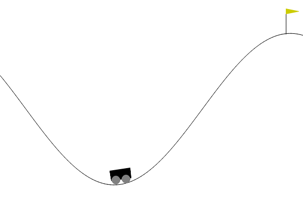
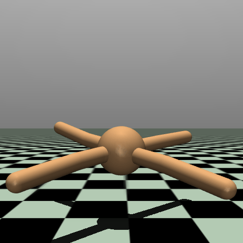

Deep Reinforcement Learning
Value function approximation
Prof. Dr. Sebastian Peitz
Chair of Safe Autonomous Systems, TU Dortmund
Summer term 2026
Content
- Limitations of tabular methods
- Value estimation / prediction with function approximation
- Gradient-based prediction
- Batch learning
Where are we?
| Chapter | Topic | Content |
|---|---|---|
| Basics & tabular methods | ||
| 1-5 | Bandits, MDPs, Dynamic Programming, Monte Carlo, TD Learning | RL basics in finite dimensions |
| Deep-learning-based methods | ||
| 6 | Brief introduction to deep learning | The basics for what comes next |
| 7 | Value function approximation | Value estimation with function approximation |
| 8 | Deep \(Q\)-learning | |
| 9 | Policy gradients | |
| 10 | Actor-critic algorithms | |
| 11 | Advanced algorithms | |
| Model-Based Control | ||
| Advanced Topics |
Limitations of tabular methods
Limitations of tabular methods
We have essentially “solved” the RL problem in part one of our lecture! But there are quite a few limitations when it comes to real-world systems:
- The curse of dimensionality: For large dimensions \(\abs{\Sc}\) or \(\abs{\Ac}\) (even moderate ones), the calculations become prohibitively expensive and convergence is very slow.
- Continuous state spaces, i.e., infinitely many possible states \[
s\in\Sc\subseteq \R^n \quad / \quad \abs{\Sc}=\infty. \qquad (\text{instead of}~\Sc = \set{s_1,\ldots,s_\abs{\Sc}})
\]
- Example: The mountain car, with continous \(\Sc=[\submin{x},\submax{x}]\times[\submin{v},\submax{v}]\) (minimal and maximal position \(x\) and velocity \(v\)), but finite \(\Ac=\set{-1,0,1}\) (accelerate left, do nothing, accelerate right).

- Continuous action spaces, i.e., infinitely many possible actions\(^*\) \[ a\in\Ac\subseteq \R^m \quad / \quad \abs{\Ac}=\infty. \qquad (\text{instead of}~\Ac = \set{a_1,\ldots,a_\abs{\Ac}}) \]
- Example: The ant, with 27 continous state variables and 8 continuous action variables.

\(^*\) For now, however, we will stick to finite action spaces.
Value estimation / prediction with function approximation
Value estimation / prediction with function approximation
- From now on, we will introduce function approximators for the quantities of interest.
- For the value function, this means that we’re looking for \[ V_\theta(s) \approx V^\pi(s).\]
- \(V_\theta(s)\) may be a linear model, i.e., \[ V_\theta(s) = \sum_{k=1}^d \theta_k \psi_k(s) = \theta_1 \psi_1(s) + \ldots + \theta_d \psi_d(s), \]
- but also a nonlinear model such as a deep neural network.
- The weight vector \(\theta\in\R^d\) typically is of lower dimension \(d\) than the state space \(\Sc\): \(d \ll \abs{\Sc}.\)
- Otherwise this exercise would be pointless!
- This obviously holds for continuous state spaces, but also for very large yet finite-dimensional state spaces.
A note on the state space dimension
We use \(n\) to denote the number of state variables, but this does not mean that we need to have \(n=\infty\) for continuous state spaces. A state space is finite if each state variable \(s_k\) is an element of a finite set, whereas it is continous, if at least one \(s_1,\ldots,s_n\) is a continuous variable.
Global impact of experience
Updates due to new experience lead to updates in our model parameter \(\theta\). This means that we modify our value estimate for many states, in contrast to tabular methods where we update individual states only.
💡 We will use greek letters (e.g., \(\theta\) or \(\phi\)) to indicate the trainable parameters.
Prediction objective
- In the tabular case a specific prediction objective was not needed:
- The learned value function could exactly match the true value.
- The value estimate at each state was decoupled from other states.
- Due to global impact of experience, we need to define an accuracy metric on the entire state space: the RL prediction goal.
Definition: Value error (VE)
The RL prediction objective is defined as the mean squared value error \[ \overline{VE}(\theta) = \int_\Sc \mu(s) \big(V^\pi(s) - V_\theta(s)\big)^2 \ds. \] Here, \(\mu(s)\geq 0\) is the state distribution, with \(\int_\Sc \mu(s)\ds = 1\).
Challenge:
- The true value \(V^\pi(s)\) is unknown in most tasks!
- We need to find ways to estimate \(V^\pi(s)\) from experience.
The on-policy prediction objective
- For prediction we will focus entirely on the on-policy case.
- Hence, \(\mu(s)\) is the on-policy distribution under the current policy \(\pi\).
On policy prediction objective
As \(\overline{VE}(\theta)\) is the expected error, we can use Monte Carlo sampling to estimate it:
\[\begin{equation} L(\theta) = \sum_{k=1}^N \big(V^\pi(s_k) - V_\theta(s_k)\big)^2 \approx \overline{VE}(\theta). \label{eq:VAL_L}\end{equation}\]
Goal: find the optimal value estimate \(V_{\theta^*}\) by optimization: \[\theta^* = \arg\min_\theta L(\theta).\]
Challenges:
- The true value \(V^\pi(s)\) is unknown in most tasks!
- The function approximator \(V_\theta(s)\) needs to be able to approximate \(V^\pi(s)\).
- Training:
- If \(V_\theta(s)\) is a linear model: convex optimization problem.
- The “easy” case: local optimum = global optimum, uniquely defined.
- If \(V_\theta(s)\) is nonlinear model: nonlinear optimization problem.
- The “hard” case: many local optima with no guarantee to locate the global one.
- Training may diverge, advanced optimization techniques are very important!
💡 Off-policy prediction: importance sampling to transform the sampled value estimates from the behavior to the target policy.\(\qquad\quad\)
\(\Rightarrow\) Increases the prediction variance; in combination with generalization errors due to function approximation: large risk of diverging.
Gradient-based prediction
Incremental weight updates
- Now that we have an objective \(L(\theta)\) we would like to optimize for (Eq. \(\eqref{eq:VAL_L}\)), let’s use gradient descent with learning rate \(\alpha\): \[\iterate{\theta}{t+1} = \iterate{\theta}{t} - \frac{1}{2} \alpha \nabla L\cbracket{\iterate{\theta}{t}} = \iterate{\theta}{t} - \frac{1}{2} \alpha \nablatheta \cbracket{\sum_{k=1}^N \big(V^\pi(s_k) - V_\theta(s_k)\big)^2}.\]
- What’s the problem here?
\(\Rightarrow\) We often only have a single sample. (Or, instead, we would like to perform an update after a single sample.)
SGD-based parameter update
Given a new sample \(s_t\) and its (for now exact) value \(V^\pi(s_t)\), we can update our current weight vector \(\iterate{\theta}{t}\) by using stochastic gradient descent (SGD) with: \[\begin{equation}\iterate{\theta}{t+1} = \iterate{\theta}{t} - \frac{1}{2} \alpha\nablatheta \rbracket{\cbracket{V^\pi(s_t) - V_\theta(s_t)}^2} \fragment{=\iterate{\theta}{t} + \alpha\rbracket{V^\pi(s_t) - V_\theta(s_t)} \nablatheta V_\theta(s_t).} \label{eq:VAL_SGD-update} \end{equation}\]
Question: Should we follow \(\eqref{eq:VAL_SGD-update}\) to optimality?
\(\Rightarrow\) No! We are optimizing for a single sample \(\rightarrow\) overfitting.
\(\Rightarrow\) Take a single, small step only, then collect new experience.
Bootstrapping the true value
Challenge 1. remains: We do not know \(V^\pi(s_t)\) which we need for our prediction objective \(\eqref{eq:VAL_L}\).
What can we do? \(\Rightarrow\) Use an estimate for \(V^\pi(s_t)\) that we can compute from experience!
Possible options for estimates:
Unbiased estimates of \(V^\pi(s_t)\)
Monte Carlo estimates for \(g_t\), sample from entire trajectories.
Bootstrapped estimates of \(V^\pi(s_t)\)
- The Dynamic Programming target \[V_\theta(s_t) \gets \sum_{a\in\Ac} \pi\agivenb{a}{s_t} \sum_{s'\in\Sc} p\agivenb{s'}{s_t, a} \left[ r + \gamma V_\theta(s') \right].\]
- TD targets (e.g., TD(\(0\))) \[ V_\theta(s_t) \gets V_\theta(s_t) + \alpha \left[r_t + \gamma V_\theta(s_{t+1}) - V_\theta(s_t)\right].\]
💡 Inserting the bootstrapped versions into \(\eqref{eq:VAL_SGD-update}\) does not yield a true gradient descent method, as we are ignoring the parametric dependency of the target on \(\theta\) (Sutton and Barto 1998). More on this on the next slides.
Algorithm: Gradient Monte Carlo value estimation
Algorithm: Gradient Monte Carlo algorithm for estimating \(V_\theta \approx V^\pi\)
Input:
- The current policy \(\pi\)
- a differentiable, parameter-dependent function \(V_\theta: \Sc \to \R\)
- learning rate \(\alpha\)
Initialize: Value function weights \(\theta\in\R^d\) arbitrarily
for \(k = 1, 2, \ldots, K\) episodes:
\(\quad\) Generate a sequence following \(\pi\): \[((s_0,a_0,r_0),(s_1,a_1,r_1),\ldots,(s_{T_k-1},a_{T_k-1},r_{T_k-1}))\] \(\quad\) Calculate the every-visit returns \(g_t\)
\(\quad\) for \(t = 0,1,\ldots,T-1\):
\(\quad\quad\) \(\theta \gets \theta + \alpha\rbracket{g_t - V_\theta(s_t)} \nablatheta V_\theta(s_t)\)
- Direct transfer from the tabular case to function approximation.
- Only change: The entry-based update (\(V(s_t) = \mathsf{average}(\ell(s_t))\)) is replaced by the SGD update for \(\theta\).
Semi-gradient methods
- If bootstrapping is applied, the true target \(V^\pi(s_t)\) is approximated by a target depending on the estimate \(V_\theta(s_t)\).
- If \(V_\theta(s_t)\) does not fit \(V^\pi(s_t)\) (which it does not before convergence), then the update target becomes a biased estimate.
- For example, in the TD(\(0\)) case, we get for \(\eqref{eq:VAL_L}\): \[L(\theta) = \sum_{t=1}^T \big(r_t + V_\theta(s_{t+1}) - V_\theta(s_t)\big)^2.\]
- Taking the gradient of the single-sample version for \(L(\theta)\) yields: \[\begin{align*} \theta ~\gets~ &\theta - \frac{1}{2} \alpha\nablatheta \rbracket{\cbracket{r_t + \gamma V_\theta(s_{t+1}) - V_\theta(s_t)}^2} \\ &= \theta - \alpha \rbracket{r_t + \gamma V_\theta(s_{t+1}) - V_\theta(s_t)}~ \textcolor{red}{\nablatheta\rbracket{\gamma V_\theta(s_{t+1}) - V_\theta(s_t)}} \\ &\neq\theta + \alpha\rbracket{r_t + \gamma V_\theta(s_{t+1}) - V_\theta(s_t)} \qquad\qquad \nablatheta V_\theta(s_t) \qquad\qquad\text{(Eq. \eqref{eq:VAL_SGD-update})}. \end{align*}\]
- Application of Eq. \(\eqref{eq:VAL_SGD-update}\) is still very common.
- These appraoches are known as semi-gradients because they do not approximate the actual gradient.
TD(\(0\)) semi-gradient update of \(\theta\)
\[\begin{equation} \theta \gets\theta + \alpha\rbracket{r_t + \gamma V_\theta(s_{t+1}) - V_\theta(s_t)} \nablatheta V_\theta(s_t). \label{eq:VAL_TDsemigradient} \end{equation}\]
💡 Even though widely applied, there are no convergence guarantees for semi-gradient methods (Sutton and Barto 1998).
Algorithm: Semi-gradient TD(\(0\)) value estimation
Algorithm: Semi-gradient TD(\(0\)) for estimating \(V_\theta \approx V^\pi\)
Input:
- The current policy \(\pi\)
- a differentiable, parameter-dependent function \(V_\theta: \Sc \to \R\)
- learning rate \(\alpha\)
Initialize: Value function weights \(\theta\in\R^d\) arbitrarily
for \(k = 1, 2, \ldots, K\) episodes:
\(\quad\) Initialize \(s_0\)
\(\quad\) for \(t = 0,1,\ldots,T-1\):
\(\quad\quad\) Apply action \(a_t\sim \pi\agivenb{\cdot}{s_t}\)
\(\quad\quad\) Observe \(r_t\) and \(s_{t+1}\)
\(\quad\quad\) \(\theta \gets \theta + \alpha\rbracket{r_t + \gamma V_\theta(s_{t+1}) - V_\theta(s_t)} \nablatheta V_\theta(s_t)\)
\(\quad\quad\) if \(s_{t+1}\) is \(\mathsf{terminal}\) then \(\STOP\)
Note: \(n\)-step version TD(\(n\))
The above algorithm can be extended towards \(n\)-step bootstrapping by replacing the TD(\(0\)) target \(r_t + \gamma V_\theta(s_{t+1})\) with the \(n\)-step bootstrapped return \[ \begin{align*} g_{t:t+n} = &r_t + \gamma r_{t+1} + \gamma^2 r_{t+2} + \ldots \\ &+ \gamma^{n-1} r_{t+n-1} + \gamma^n V_{\theta}(s_{t+n}) . \end{align*} \] The most challenging part in the implementation is the assessment of the remaining number of steps (i.e., when \(T-t<n\)).
For details, see (Sutton and Barto 1998, Ch. 9.4).
Batch learning
Batch learning / experience replay
- As discussed during the TD learning lecture, training on individual samples can be slow.
- This also applies to SGD-based updates with bootstrapping.
- Alternative: Batch learning methods
Mini-batch semi-gradient TD(\(0\)) with experience replay
Based on a dataset \(\Dc=\set{(s_0, V^\pi(s_0)),\ldots,(s_N, V^\pi(s_N))}\), repeat
- Sample uniformly \(b\) state-value pairs from experience (so-called mini batches), i.e., \(\Bc=\set{(s_i, V^\pi(s_i))}_{i=1}^b \subset\Dc\): \[(s_i, V^\pi(s_i)) \sim\Dc.\]
- Apply (semi) SGD update step: \[ \theta \gets \theta + \frac{\alpha}{b} \sum_{(s_i, V^\pi(s_i))\in\Bc} \rbracket{V^\pi(s_i) - V_{\theta}(s_i)} \nablatheta V_{\theta}(s_i).\]
Remarks:
- Universally applicable: \(V_{\theta}\) can be any differentiable function.
- The true target \(V^\pi\) is usually approximated by MC or TD targets.
Least squares policy evaluation
Linear modeling of value functions
- Let’s assume that we choose an approximation that is linear w.r.t. the weights \(\theta\): \[ V_{\theta}(s) = \theta^\top \psi(s) = \sum_{k=1}^d \theta_k \psi_k(s) . \]
- What’s the gradient in this case? \(\Rightarrow\) it’s simply the feature vector, \[\nablatheta V_\theta(s) = \nablatheta \theta^\top \psi(s) = \psi(s) .\]
- Our semi-gradient TD(\(0\)) update \(\eqref{eq:VAL_TDsemigradient}\) thus simply becomes \[\begin{align*} \theta \gets &\theta + \alpha\rbracket{r_t + \gamma V_\theta(s_{t+1}) - V_\theta(s_t)} \nablatheta V_\theta(s_t) \\ &= \theta + \alpha\rbracket{r_t + \gamma \theta^\top \psi(s_{t+1}) - \theta^\top \psi(s_{t})} \psi(s_{t}) \\ &= \theta + \alpha\rbracket{r_t + \gamma \theta^\top \psi_{t+1} - \theta^\top \psi_{t}} \psi_{t} \fragment{ = \theta + \alpha\rbracket{r_t + \theta^\top \cbracket{\gamma \psi_{t+1} - \psi_{t}}} \psi_{t},} \end{align*}\] where we have introduced \(\psi_t\) for \(\psi(s_t)\).
- Similarly, in batch mode, our bootstrapped version of the on-policy prediction objective \(\eqref{eq:VAL_L}\) becomes \[ L(\theta) = \sum_{t=0}^{T-1} \big(r_t + \gamma \theta^\top \psi(s_{t+1}) - \theta^\top \psi(s_{t})\big)^2 \fragment{=\sum_{t=0}^T \big(r_t - \rbracket{\psi^\top_{t} - \gamma \psi^\top_{t+1}} \theta\big)^2 .} \]
Least Squares TD learning (LSTD)
- Collect data: \[ y = \begin{bmatrix} r_0 \\ \vdots \\ r_{T-1} \end{bmatrix}, \qquad \Psi = \begin{bmatrix} \psi_0^\top - \gamma \psi_1^\top\\ \vdots \\ \psi_{T-1}^\top - \gamma \psi_T^\top \end{bmatrix}.\]
- Loss function: \[ L(\theta) = \sum_{t=0}^{T-1} \big(r_t - \rbracket{\psi^\top_{t} - \gamma \psi^\top_{t+1}} \theta\big)^2 = \frac{1}{N} \norm{y - \Psi \theta }_F^2 . \]
- Optimal solution (a.k.a. TD fixed point (Sutton and Barto 1998, Sec. 9.4)): \[ \theta^* = (\Psi^\top \Psi)^{-1} \Psi^\top y = \Psi^\dagger y .\]
- Estimated value function: \[ V_{\theta^*}(s) = {\theta^*}^\top \psi(s) = \sum_{k=1}^d \theta^*_k \psi_k(s) . \]
Recall: Linear regression
- Model: \(\hat{y} = f_\Theta(x) = \Theta^\top x.\)
- Loss function \(L(\Theta)\) (MSE): \[\begin{align*} \frac{1}{N} \sum_{k=1}^N \norm{\Theta^\top x_k - y_k}_2^2 =\frac{1}{N} \norm{X\Theta - Y}_F^2 . \end{align*}\]
- Batch data: \[ X = \begin{pmatrix} x_1^\top \\ \vdots \\ x_N^\top \end{pmatrix}, \quad Y = \begin{pmatrix} y_1^\top \\ \vdots \\ y_N^\top \end{pmatrix}\]
- Optimal solution (\(\Theta^*\)): \[ \Theta^* = (X^\top X)^{-1} X^\top Y = X^\dagger Y. \]
Summary / what you have learned
Summary / what you have learned
- To cover large or continuous state spaces function approximation is required.
- On-policy prediction is straightforward with function approximation:
- Transfer of incremental learning from the tabular case to gradient descent for \(\theta\).
- Stochastic gradient descent allows step-by-step based updates.
- Gradient-based prediction is not risk free (especially non-linear case):
- challenging optimization problems (descent directions, learning rates, etc.),
- local optima vs. global optimum.
- If bootstrapping is applied, the update target depends on \(\theta\).
- True gradient becomes computationally more complex.
- Semi-gradient methods reduce computational burden at accuracy costs.
- Batch learning is often more efficient for training.
- Linear models can be trained in a single step using the pseudo-inverse.
References
Sutton, R. S., and A. G. Barto. 1998. Reinforcement Learning: An Introduction. MIT Press.